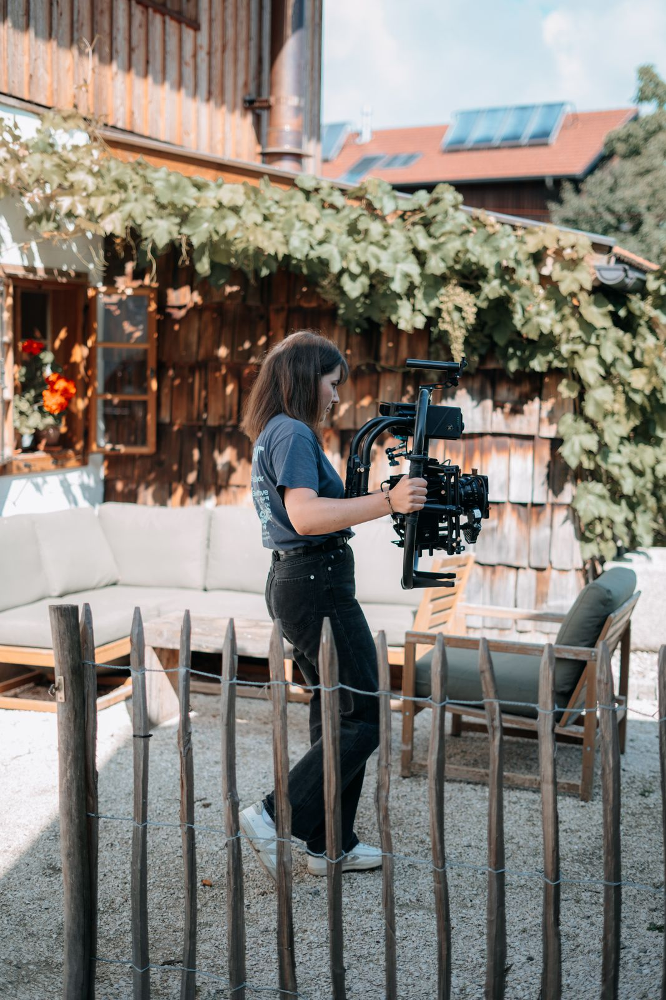

Homestories
Ein Drehtag, eine persönliche Geschichte - und Content für mehrere Kanäle und Wochen. Für die Sparkasse Oberösterreich produzierten wir eine fünfteilige Homestory-Serie rund um echte Menschen und ihr Zuhause.

Echte Menschen statt Banken-Content.
Im Mittelpunkt der Homestories stehen echte Menschen und die Geschichten hinter ihrem Zuhause. Statt klassischem Banken-Content entstand ein nahbares Unterhaltungsformat über Neubau, Sanierung, Finanzierung und die persönlichen Entscheidungen auf dem Weg zum Eigenheim. Die Sparkasse bleibt bewusst im Hintergrund - als natürlicher Partner auf diesem Weg.
Unsere Aufgabe umfasste die Entwicklung des Serienkonzepts, die redaktionelle Vorbereitung der Gespräche und die gesamte filmische Umsetzung. Die Interviews bilden den roten Faden - ergänzt durch eine geführte Roomtour, bewegte Gimbal-Aufnahmen, Details des Hauses und Drohnenbilder der Umgebung.
Schon bei der Vorbereitung und am Set dachten wir nicht nur an den Hauptfilm: Bildaufbau, Interviewführung und zusätzliche Szenen wurden so geplant, dass aus demselben Drehtag unterschiedliche Assets für YouTube, Instagram, Facebook und weitere Touchpoints entstehen konnten.


Ein Drehtag, viele Formate.
Nicht derselbe Film in drei Größen: Jedes Format erfüllt eine eigene Aufgabe. Der Hero-Film erzählt die ganze Geschichte, kürzere Versionen greifen einzelne Aussagen und visuelle Highlights auf und machen daraus eigenständige Social-Media-Inhalte.



Eine Geschichte, ein Quartal Präsenz.
Aus einem einzigen Drehtag entstand ein vielseitiges Content-Paket, das über mehrere Kanäle und einen längeren Zeitraum ausgespielt werden konnte: eine persönliche Homestory als Herzstück - ergänzt durch kurze, plattformgerechte Assets für laufende Präsenz auf Social Media.
Genau auf diesem Prinzip basiert Dailies: Inhalte gebündelt produzieren, Formate schon beim Dreh mitdenken und aus einem Produktionstag möglichst viel relevanten Content gewinnen.